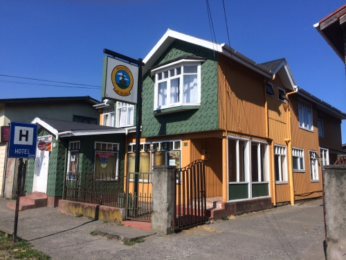
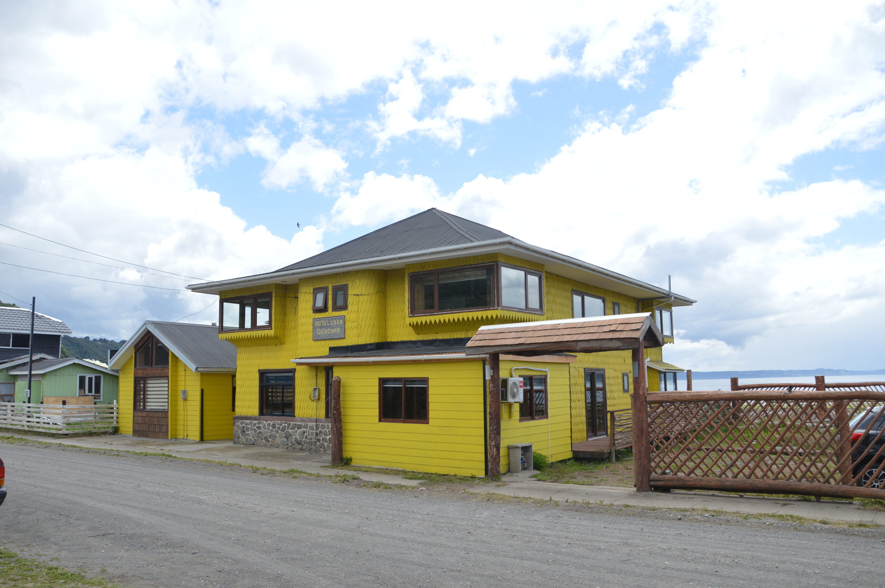

<!DOCTYPE html>
<html>
<head>
    
    <meta http-equiv="content-type" content="text/html; charset=UTF-8" />
    
        <script>
            L_NO_TOUCH = false;
            L_DISABLE_3D = false;
        </script>
    
    <style>html, body {width: 100%;height: 100%;margin: 0;padding: 0;}</style>
    <style>#map {position:absolute;top:0;bottom:0;right:0;left:0;}</style>
    <script src="https://cdn.jsdelivr.net/npm/leaflet@1.9.3/dist/leaflet.js"></script>
    <script src="https://code.jquery.com/jquery-3.7.1.min.js"></script>
    <script src="https://cdn.jsdelivr.net/npm/bootstrap@5.2.2/dist/js/bootstrap.bundle.min.js"></script>
    <script src="https://cdnjs.cloudflare.com/ajax/libs/Leaflet.awesome-markers/2.0.2/leaflet.awesome-markers.js"></script>
    <link rel="stylesheet" href="https://cdn.jsdelivr.net/npm/leaflet@1.9.3/dist/leaflet.css"/>
    <link rel="stylesheet" href="https://cdn.jsdelivr.net/npm/bootstrap@5.2.2/dist/css/bootstrap.min.css"/>
    <link rel="stylesheet" href="https://netdna.bootstrapcdn.com/bootstrap/3.0.0/css/bootstrap-glyphicons.css"/>
    <link rel="stylesheet" href="https://cdn.jsdelivr.net/npm/@fortawesome/fontawesome-free@6.2.0/css/all.min.css"/>
    <link rel="stylesheet" href="https://cdnjs.cloudflare.com/ajax/libs/Leaflet.awesome-markers/2.0.2/leaflet.awesome-markers.css"/>
    <link rel="stylesheet" href="https://cdn.jsdelivr.net/gh/python-visualization/folium/folium/templates/leaflet.awesome.rotate.min.css"/>
    
            <meta name="viewport" content="width=device-width,
                initial-scale=1.0, maximum-scale=1.0, user-scalable=no" />
            <style>
                #map_b0a8d893ac8551699ec992aac6f25187 {
                    position: relative;
                    width: 100.0%;
                    height: 100.0%;
                    left: 0.0%;
                    top: 0.0%;
                }
                .leaflet-container { font-size: 1rem; }
            </style>
        
    <script src="https://cdn.jsdelivr.net/npm/leaflet.fullscreen@3.0.0/Control.FullScreen.min.js"></script>
    <link rel="stylesheet" href="https://cdn.jsdelivr.net/npm/leaflet.fullscreen@3.0.0/Control.FullScreen.css"/>
    <script src="https://cdnjs.cloudflare.com/ajax/libs/leaflet.draw/1.0.2/leaflet.draw.js"></script>
    <link rel="stylesheet" href="https://cdnjs.cloudflare.com/ajax/libs/leaflet.draw/1.0.2/leaflet.draw.css"/>
    <script src="https://unpkg.com/leaflet-control-geocoder/dist/Control.Geocoder.js"></script>
    <link rel="stylesheet" href="https://unpkg.com/leaflet-control-geocoder/dist/Control.Geocoder.css"/>
</head>
<body>
    
    
            <div class="folium-map" id="map_b0a8d893ac8551699ec992aac6f25187" ></div>
        
</body>
<script>
    
    
            var map_b0a8d893ac8551699ec992aac6f25187 = L.map(
                "map_b0a8d893ac8551699ec992aac6f25187",
                {
                    center: [-42.4721485, -73.4967096],
                    crs: L.CRS.EPSG3857,
                    ...{
  "zoom": 11,
  "zoomControl": true,
  "preferCanvas": false,
  "drawExport": false,
  "layersControl": true,
}

                }
            );
            L.control.scale().addTo(map_b0a8d893ac8551699ec992aac6f25187);

            

        
    
            var tile_layer_1318bbd077705a3e240c45db08587065 = L.tileLayer(
                "https://tile.openstreetmap.org/{z}/{x}/{y}.png",
                {
  "minZoom": 0,
  "maxZoom": 24,
  "maxNativeZoom": 24,
  "noWrap": false,
  "attribution": "\u0026copy; \u003ca href=\"https://www.openstreetmap.org/copyright\"\u003eOpenStreetMap\u003c/a\u003e contributors",
  "subdomains": "abc",
  "detectRetina": false,
  "tms": false,
  "opacity": 1,
}

            );
        
    
            tile_layer_1318bbd077705a3e240c45db08587065.addTo(map_b0a8d893ac8551699ec992aac6f25187);
        
    
            L.control.fullscreen(
                {
  "position": "topleft",
  "title": "Full Screen",
  "titleCancel": "Exit Full Screen",
  "forceSeparateButton": false,
}
            ).addTo(map_b0a8d893ac8551699ec992aac6f25187);
        
    
            var options = {
              position: "topleft",
              draw: {},
              edit: {},
            }
                // FeatureGroup is to store editable layers.
                var drawnItems_draw_control_1badbf7a33eb0ba10a08561c9c1470b6 =
                    new L.featureGroup().addTo(
                        map_b0a8d893ac8551699ec992aac6f25187
                    );

            options.edit.featureGroup = drawnItems_draw_control_1badbf7a33eb0ba10a08561c9c1470b6;
            var draw_control_1badbf7a33eb0ba10a08561c9c1470b6 = new L.Control.Draw(
                options
            ).addTo( map_b0a8d893ac8551699ec992aac6f25187 );
            map_b0a8d893ac8551699ec992aac6f25187.on(L.Draw.Event.CREATED, function(e) {
                var layer = e.layer,
                    type = e.layerType;
                var coords = JSON.stringify(layer.toGeoJSON());
                layer.on('click', function() {
                    alert(coords);
                    console.log(coords);
                });
                drawnItems_draw_control_1badbf7a33eb0ba10a08561c9c1470b6.addLayer(layer);
            });
            map_b0a8d893ac8551699ec992aac6f25187.on('draw:created', function(e) {
                drawnItems_draw_control_1badbf7a33eb0ba10a08561c9c1470b6.addLayer(e.layer);
            });

            
        
    

            var geocoderOpts_geocoder_b76ffae98fe77ecaa2eeedba4bc820ef = {
  "collapsed": true,
  "position": "topleft",
  "defaultMarkGeocode": true,
  "zoom": 11,
  "provider": "nominatim",
  "providerOptions": {
},
};

            // note: geocoder name should start with lowercase
            var geocoderName_geocoder_b76ffae98fe77ecaa2eeedba4bc820ef = geocoderOpts_geocoder_b76ffae98fe77ecaa2eeedba4bc820ef["provider"];

            var customGeocoder_geocoder_b76ffae98fe77ecaa2eeedba4bc820ef = L.Control.Geocoder[ geocoderName_geocoder_b76ffae98fe77ecaa2eeedba4bc820ef ](
                geocoderOpts_geocoder_b76ffae98fe77ecaa2eeedba4bc820ef['providerOptions']
            );
            geocoderOpts_geocoder_b76ffae98fe77ecaa2eeedba4bc820ef["geocoder"] = customGeocoder_geocoder_b76ffae98fe77ecaa2eeedba4bc820ef;

            L.Control.geocoder(
                geocoderOpts_geocoder_b76ffae98fe77ecaa2eeedba4bc820ef
            ).on('markgeocode', function(e) {
                var zoom = geocoderOpts_geocoder_b76ffae98fe77ecaa2eeedba4bc820ef['zoom'] || map_b0a8d893ac8551699ec992aac6f25187.getZoom();
                map_b0a8d893ac8551699ec992aac6f25187.setView(e.geocode.center, zoom);
            }).addTo(map_b0a8d893ac8551699ec992aac6f25187);

        
    
            map_b0a8d893ac8551699ec992aac6f25187.fitBounds(
                [[-42.4721485, -73.4967096], [-42.4721485, -73.4967096]],
                {"maxZoom": 11}
            );
        
    
            var tile_layer_b114b885693b2fa7b960a66cb636fcc2 = L.tileLayer(
                "https://server.arcgisonline.com/ArcGIS/rest/services/World_Imagery/MapServer/tile/{z}/{y}/{x}",
                {
  "minZoom": 0,
  "maxZoom": 24,
  "maxNativeZoom": 24,
  "noWrap": false,
  "attribution": "Esri",
  "subdomains": "abc",
  "detectRetina": false,
  "tms": false,
  "opacity": 1,
}

            );
        
    
            tile_layer_b114b885693b2fa7b960a66cb636fcc2.addTo(map_b0a8d893ac8551699ec992aac6f25187);
        
    
        L.Control.CustomControl = L.Control.extend({
            onAdd: function(map) {
                let div = L.DomUtil.create('div');
                div.innerHTML = `<div style="font-size: 20px; color: black; font-weight: normal;
            padding: 5px; background-color: white;
            border-radius: 5px;">Hopedajes Achao isla Quinchao</div>`;
                return div;
            },
            onRemove: function(map) {
                // Nothing to do here
            }
        });
        L.control.customControl = function(opts) {
            return new L.Control.CustomControl(opts);
        }
        L.control.customControl(
            { position: "topright" }
        ).addTo(map_b0a8d893ac8551699ec992aac6f25187);
        
    
            var marker_9fca5035c5b0f994b2c3427bc3cd79be = L.marker(
                [-42.47149546362786, -73.49182022214148],
                {
  "iconColor": "darkred",
}
            ).addTo(map_b0a8d893ac8551699ec992aac6f25187);
        
    
        var popup_cb8f9e4ce15e943d44cbe4d819edbf7f = L.popup({
  "maxWidth": "100%",
});

        
            
                var html_2b883a188fb695093b7ccb5ffdd9b8a3 = $(`<div id="html_2b883a188fb695093b7ccb5ffdd9b8a3" style="width: 100.0%; height: 100.0%;">         <div style="text-align:center;">           <b>Hostal Jarín de Achao</b><br>           Serrano 065, Achao, Quinchao, Los Lagos Fono: 65-2661384<br>                    </div>     </div>`)[0];
                popup_cb8f9e4ce15e943d44cbe4d819edbf7f.setContent(html_2b883a188fb695093b7ccb5ffdd9b8a3);
            
        

        marker_9fca5035c5b0f994b2c3427bc3cd79be.bindPopup(popup_cb8f9e4ce15e943d44cbe4d819edbf7f)
        ;

        
    
    
            var marker_025a8be5d132aa3844565e1c1b70bbb1 = L.marker(
                [-42.46944812305383, -73.49001628544127],
                {
  "iconColor": "darkred",
}
            ).addTo(map_b0a8d893ac8551699ec992aac6f25187);
        
    
        var popup_360bb9c63c161db1703bbbbc12e09a6d = L.popup({
  "maxWidth": "100%",
});

        
            
                var html_039ec1c4bfd6ff6603e83f2e21ecd82e = $(`<div id="html_039ec1c4bfd6ff6603e83f2e21ecd82e" style="width: 100.0%; height: 100.0%;">         <div style="text-align:center;">           <b>Arca Hotel y Restaurante</b><br>           Arturo Prat 56, Achao, Quinchao, Los Lagos Fono: 9 9837 9618<br>                    </div>     </div>`)[0];
                popup_360bb9c63c161db1703bbbbc12e09a6d.setContent(html_039ec1c4bfd6ff6603e83f2e21ecd82e);
            
        

        marker_025a8be5d132aa3844565e1c1b70bbb1.bindPopup(popup_360bb9c63c161db1703bbbbc12e09a6d)
        ;

        
    
    
            var marker_fb2fe692fcbd10d3df7d2bb385ede484 = L.marker(
                [-42.46770907901008, -73.49872633578171],
                {
  "iconColor": "darkred",
}
            ).addTo(map_b0a8d893ac8551699ec992aac6f25187);
        
    
        var popup_69f1d82fc2b1702c8d51ca44b5563db9 = L.popup({
  "maxWidth": "100%",
});

        
            
                var html_896ef46c98e6e66f74d5d371ad976725 = $(`<div id="html_896ef46c98e6e66f74d5d371ad976725" style="width: 100.0%; height: 100.0%;">         <div style="text-align:center;">           <b>Hotel Casa Quinchao</b><br>           Delicias 142, Quinchao, Los Lagos Fono: 9 7669 7125<br>                    </div>     </div>`)[0];
                popup_69f1d82fc2b1702c8d51ca44b5563db9.setContent(html_896ef46c98e6e66f74d5d371ad976725);
            
        

        marker_fb2fe692fcbd10d3df7d2bb385ede484.bindPopup(popup_69f1d82fc2b1702c8d51ca44b5563db9)
        ;

        
    
    
            var layer_control_c53dbc3918c4eac7ebd810610428e2a7_layers = {
                base_layers : {
                    "openstreetmap" : tile_layer_1318bbd077705a3e240c45db08587065,
                },
                overlays :  {
                    "Esri.WorldImagery" : tile_layer_b114b885693b2fa7b960a66cb636fcc2,
                },
            };
            let layer_control_c53dbc3918c4eac7ebd810610428e2a7 = L.control.layers(
                layer_control_c53dbc3918c4eac7ebd810610428e2a7_layers.base_layers,
                layer_control_c53dbc3918c4eac7ebd810610428e2a7_layers.overlays,
                {
  "position": "topright",
  "collapsed": true,
  "autoZIndex": true,
}
            ).addTo(map_b0a8d893ac8551699ec992aac6f25187);

        
</script>
</html>